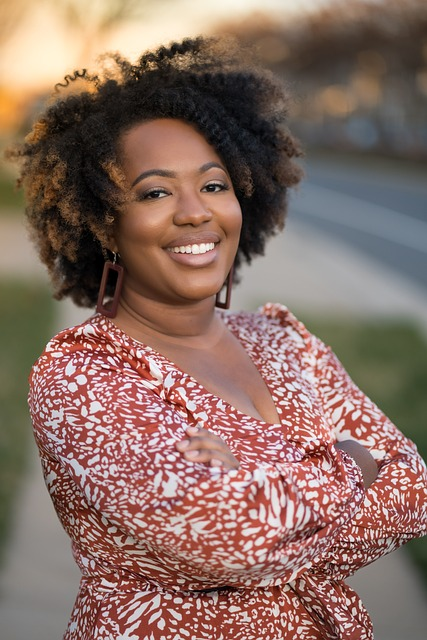

Découvrez les intervenants du Festival
Jean Tremblay
Jean Tremblay est un spécialiste en gestion de la diversité en entreprise avec plus de 20 ans d'expérience. Il est l'auteur de plusieurs ouvrages sur l'inclusion au travail et intervient régulièrement dans des conférences internationales.

Marie Durand
Marie Durand est une chercheuse spécialisée dans les questions d'égalité des genres. Elle travaille sur les politiques publiques en faveur de l'inclusion et a publié plusieurs études sur l'impact des diversités dans le monde professionnel.

Fatou Ndiaye
Fatou Ndiaye est une activiste pour les droits des minorités et directrice d'une organisation internationale œuvrant pour l'inclusion des populations marginalisées. Elle est une conférencière reconnue et a participé à de nombreux événements mondiaux sur la diversité.